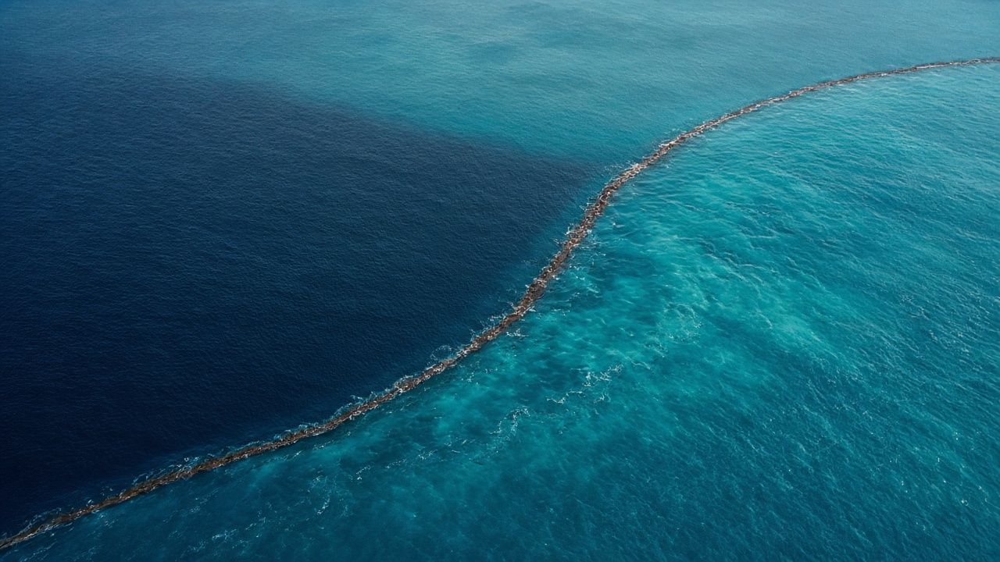
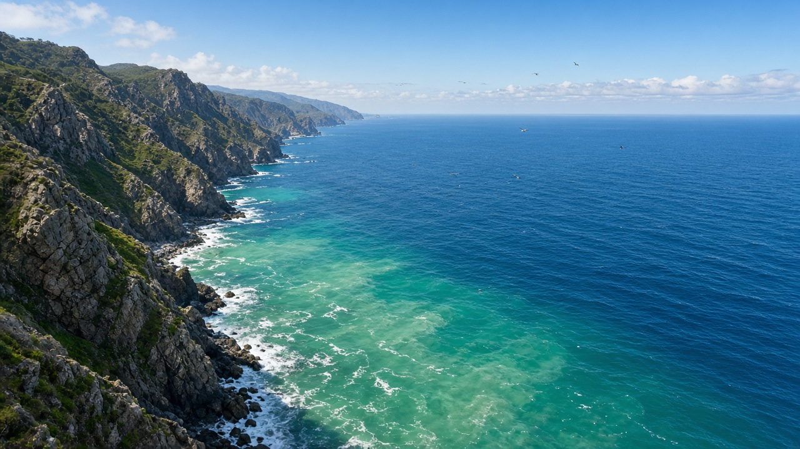
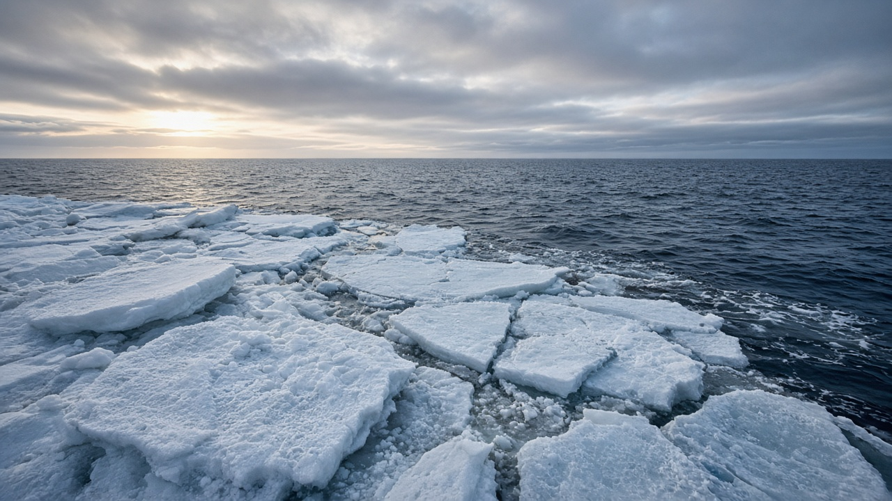

Physical Oceanography and Ocean Circulation
Published on August 20, 2026

Physical oceanography studies how heat, salt, and momentum move through the world ocean. Surface winds drive basin-scale gyres, while the Coriolis effect turns those currents to the right in the Northern Hemisphere and to the left in the Southern Hemisphere, producing western boundary streams such as the Gulf Stream and Kuroshio that carry warm water poleward. Density differences created by cooling, evaporation, and ice formation sink water in polar regions and feed the slow thermohaline overturning that ventilates the deep ocean over centuries. Together these pathways redistribute heat from the tropics, shape storm tracks, and set the travel time of nutrients and dissolved gases between basins.
Vertical motion is as important as horizontal flow. Coastal and equatorial upwelling lifts cold, nutrient-rich water into the sunlit layer, supporting some of the planet’s richest fisheries, while downwelling and mixing at fronts bury heat and carbon. Seasonal monsoon winds reverse the Somali Current and rearrange the Indian Ocean, so the Bay of Bengal becomes fresher and more stratified than the saltier Arabian Sea. Mesoscale eddies, internal waves, and tidal mixing stir the thermocline at scales that satellites and research vessels now map with increasing precision, revealing that the ocean is a mosaic of filaments rather than a handful of named currents.
Understanding circulation is a practical skill for climate, shipping, and coastal planning. Slowing of Atlantic overturning, shifting monsoon currents, and stronger stratification under warming all change rainfall, fish habitat, and the fate of pollutants. Argo floats, satellite altimetry, and coastal radars turn abstract physics into maps that governments and fishing communities can use. Students who grasp gyres, upwelling, and density-driven sinking can read why one coastline is productive and another is oligotrophic, and why what happens in polar seas eventually reaches tropical coasts and river-fed bays such as the Bay of Bengal.

भौतिक समुद्र विज्ञानले विश्व महासागरमा ताप, लवण र संवेग कसरी सर्छ भन्ने अध्ययन गर्छ। सतहको हावाले बेसिन-स्तरीय चक्रधारा चलाउँछ भने कोरिओलिस प्रभावले उत्तरी गोलार्धमा ती धारालाई दायाँ र दक्षिणी गोलार्धमा बायाँ मोड्छ, जसले गल्फ स्ट्रिम र कुरोशियो जस्ता पश्चिमी सीमा धारा जन्मन्छन् र न्यानो पानी ध्रुवतर्फ लैजान्छन्। चिसोपन, वाष्पीकरण र बरफ बन्ने प्रक्रियाले घनत्व फरक पारी ध्रुवीय क्षेत्रमा पानी डुबाउँछ र गहिरो महासागरलाई शताब्दीऔंमा हावा दिने ढिलो ताप-लवणीय उल्टो प्रवाह खुवाउँछ। यी बाटोहरूले उष्ण प्रदेशबाट ताप बाँड्छन्, आँधीको मार्ग आकार दिन्छन् र पोषक तथा घुलित ग्यासको यात्रा समय निर्धारण गर्छन्।
ठाडो गति तेर्सो प्रवाह जत्तिकै महत्त्वपूर्ण छ। तटीय र भूमध्यरेखीय उत्थानले चिसो, पोषक-धनी पानी सूर्य लाग्ने तहमा उठाउँछ र संसारका सबैभन्दा धनी मत्स्यक्षेत्र समर्थन गर्छ, जबकि अधोझरन र मोर्चामा मिश्रणले ताप र कार्बन गाड्छ। मौसमी मनसुन हावाले सोमाली धारालाई उल्ट्याउँछ र हिन्द महासागर पुनर्व्यवस्थित गर्छ, त्यसैले बंगालको खाडी अरब सागरभन्दा ताजा र बढी तहबद्ध हुन्छ। मध्यम-स्तरीय घुम्ती, आन्तरिक लहर र ज्वारीय मिश्रणले तापसीमालाई उपग्रह र अनुसन्धान जहाजले नक्सा गर्ने सूक्ष्म स्तरमा चलाउँछन्, जसले महासागर नामित धाराको मुठी होइन तन्तुहरूको मोज़ेक हो भन्ने देखाउँछ।
परिसंचरण बुझ्नु जलवायु, ढुवानी र तटीय योजनाका लागि व्यावहारिक सीप हो। एटलान्टिक उल्टो प्रवाह सुस्त हुनु, मनसुन धारा सर्नु र तापक्रम वृद्धिसँग तहबद्धता बलियो हुनुले वर्षा, माछाको वासस्थान र प्रदूषकको भाग्य बदल्छ। आर्गो फ्लोट, उपग्रह उचाइमिति र तटीय राडारले अमूर्त भौतिकीलाई सरकार र माछा मार्ने समुदायले प्रयोग गर्न सक्ने नक्सा बनाउँछन्। चक्रधारा, उत्थान र घनत्व-चालित डुबान बुझ्ने विद्यार्थीले एक किनारा किन उत्पादक र अर्को किन पोषक-दरिद्र छ, र ध्रुवीय समुद्रमा भएको घटना उष्ण तट तथा बंगालको खाडी जस्ता नदी-पोषित खाडीसम्म किन पुग्छ पढ्न सक्छन्।

भौतिक समुद्र विज्ञान यह अध्ययन करता है कि विश्व महासागर में ऊष्मा, लवण और संवेग कैसे चलते हैं। सतह की हवाएँ बेसिन-स्तरीय चक्रधाराएँ चलाती हैं, जबकि कोरिओलिस प्रभाव उत्तरी गोलार्ध में उन धाराओं को दाईं ओर और दक्षिणी गोलार्ध में बाईं ओर मोड़ता है, जिससे गल्फ स्ट्रीम और कुरोशियो जैसी पश्चिमी सीमा धाराएँ गर्म जल को ध्रुव की ओर ले जाती हैं। शीतलन, वाष्पीकरण और बर्फ बनने से घनत्व अंतर ध्रुवीय क्षेत्रों में जल डुबाता है और गहरे महासागर को सदियों में हवा देने वाला धीमा ताप-लवणीय उलटाव पोषित करता है। ये मार्ग उष्णकटिबंध से ऊष्मा बाँटते, तूफान पथ आकार देते और पोषक तथा घुलित गैसों का यात्रा समय तय करते हैं।
ऊर्ध्व गति क्षैतिज प्रवाह जितनी ही महत्त्वपूर्ण है। तटीय और भूमध्यरेखीय उत्थान ठंडा, पोषक-समृद्ध जल सूर्य-प्रकाशित परत में उठाता है और ग्रह की कुछ सबसे समृद्ध मत्स्यक्षेत्रों का समर्थन करता है, जबकि अधोझरन और मोर्चों पर मिश्रण ऊष्मा और कार्बन गाड़ते हैं। मौसमी मानसून हवाएँ सोमाली धारा को उलटी करती हैं और हिन्द महासागर को पुनर्व्यवस्थित करती हैं, इसलिए बंगाल की खाड़ी अरब सागर से अधिक मीठी और अधिक स्तरित रहती है। मध्यम-स्तरीय भँवर, आंतरिक तरंगें और ज्वारीय मिश्रण तापसीमा को उपग्रह और शोध पोत जिन पैमानों पर नक्शा करते हैं उन पर हिलाते हैं, जिससे महासागर नामित धाराओं की मुट्ठी नहीं तंतुओं का मोज़ेक दिखाई देता है।
परिसंचरण समझना जलवायु, नौवहन और तटीय योजना के लिए व्यावहारिक कौशल है। अटलांटिक उलटाव का धीमा होना, मानसून धाराओं का खिसकना और गर्म होते महासागर में स्तरण का बढ़ना वर्षा, मछली आवास और प्रदूषकों का भाग्य बदलते हैं। आर्गो फ्लोट, उपग्रह तुंगतामिति और तटीय राडार अमूर्त भौतिकी को सरकारों और मछुआरा समुदायों के काम आने वाले नक्शों में बदलते हैं। चक्रधारा, उत्थान और घनत्व-चालित डूबान समझने वाले छात्र पढ़ सकते हैं कि एक तट उत्पादक क्यों है और दूसरा पोषक-दरिद्र क्यों, और ध्रुवीय समुद्र में घटित घटना उष्ण तटों तथा बंगाल की खाड़ी जैसी नदी-पोषित खाड़ियों तक क्यों पहुँचती है।